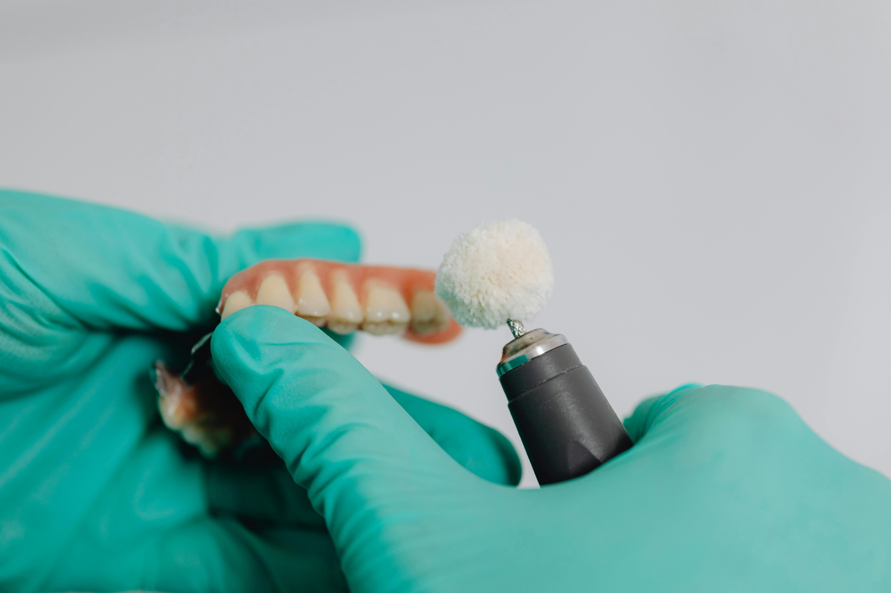

המדריך המלא: איך לנקות ולתחזק שיניים תותבות נכון?
השורה התחתונה (תקציר):
- חובה לצחצח את התותבות מדי יום, אך ללא משחת שיניים רגילה שעלולה לשרוט אותן.
- יש להשתמש במברשת רכה וסבון כלים עדין או חומר ייעודי לתותבות.
- יש להסיר את התותבת בלילה ולהשרותה במים, כדי לתת לחניכיים מנוחה ולשמור על צורת הפלסטיק.
- אסור לשטוף במים רותחים, אקונומיקה או להכניס למדיח כלים – הדבר יהרוס את התותבת.
שיניים תותבות הן השקעה חשובה באיכות החיים שלכם. תחזוקה נכונה לא רק תשמור עליהן אסתטיות ולבנות לשנים רבות, אלא גם תמנע דלקות חניכיים, ריח רע מהפה ותקלות מיותרות. ריכזנו עבורכם את הכללים שכל מרכיב תותבות חייב להכיר.
1. צחצוח יומיומי – לא עם משחת שיניים!
ממש כמו שיניים טבעיות, גם על התותבות מצטברים פלאק, חיידקים ושאריות מזון. יש לצחצח אותן לפחות פעם אחת ביום. אבל שימו לב: משחות שיניים רגילות מכילות חלקיקים שוחקים שעלולים לשרוט את החומר האקרילי של התותבת. שריטות אלו הופכות לקרקע פורייה להצטברות חיידקים וכתמים.
איך מצחצחים נכון? השתמשו במברשת שיניים בעלת סיבים רכים (או מברשת ייעודית לתותבות) ויחד עם סבון כלים עדין ונטול צבע, או חומר ניקוי מיוחד לתותבות. צחצחו היטב את כל המשטחים, כולל החלק שבא במגע עם החניכיים.
מורפולוגיה חומרית של התותבת ובקרת ביופילם
הבסיס הוורוד של מרבית השיניים התותבות מיוצר מחומר פולימרי הנקרא פולימתיל-מתאקרילט (PMMA). למרות שפני השטח נראים חלקים לעין בלתי מזוינת, ברמה המיקרוסקופית מדובר בחומר נקבובי המכיל מיקרו-סדקים. שימוש במשחות שיניים דנטליות מסחריות (המכילות חומרי שחיקה כמו אלומינה או סיליקה) גורם לשריטות בננו-מבנה של האקריל. חריצים אלו הופכים לאתרי עיגון אידיאליים עבור ביופילם פולי-מיקרוביאלי (הכולל מושבות חיידקי סטרפטוקוקוס ונבגי קנדידה). על פי הפרוטוקולים הקליניים המקובלים ברפואת שיניים משקמת, בקרת ביופילם נאותה מחייבת סילוק מכני עדין המשולב עם פירוק כימי (כגון פרוקסידים אלקליים המצויים בטבליות השריה), על מנת למנוע זיהומים אוראליים ומערכתיים נלווים.
2. מנוחה בלילה והשריה
החניכיים שלכם זקוקות למנוחה מהלחץ של התותבת. כפי שהסברנו במאמר נפרד, אסור לישון עם שיניים תותבות, ויש להוציא אותן לפני השינה. כדי שהתותבת לא תתייבש ותאבד את צורתה המדויקת, יש להשרות אותה בכוס מים (בטמפרטורת החדר) או בתמיסת ניקוי ייעודית (טבליות תוססות). בבוקר, לפני ההרכבה, שטפו את התותבת היטב במים זורמים כדי להסיר שאריות חומרים מהתמיסה.
3. שטיפה לאחר ארוחות
הרגל מצוין שכדאי לאמץ הוא שטיפת התותבת במים זורמים לאחר כל ארוחה. הוציאו את התותבת בעדינות, שטפו אותה כדי להסיר חלקיקי מזון גדולים, ושטפו גם את חלל הפה והחניכיים שלכם לפני שאתם מחזירים אותה למקום.
4. ממה חובה להימנע?
ישנם מספר חומרים שעלולים להרוס את התותבת שלכם לחלוטין:
- מים רותחים: עלולים לעוות ולהמיס את הפלסטיק והאקריל, ולפגוע בהתאמה לחניכיים.
- אקונומיקה וחומרי הלבנה חזקים: מחלישים את מבנה התותבת וגורמים לשינוי צבע החלק הוורוד (שמדמה את החניכיים).
- מדיח כלים: החום והחומרים הכימיים אינם מותאמים לשיניים תותבות בשום צורה.
5. ניקוי אבנית מקצועי במרפאה
גם אם תצחצחו בצורה מושלמת, עם הזמן עלולה להצטבר אבנית קשה על התותבת. אל תנסו לגרד אותה בעצמכם! שימוש בכלים חדים עלול לסדוק או לשבור את התותבת. במידה ויש אבנית, פנו לרופא השיניים שיבצע ניקוי בטוח ויסודי בעזרת מכשור אולטרסוני מקצועי, שיחזיר לתותבת את הברק והניקיון שלה.
התותבת זקוקה לניקוי מקצועי או ריפוד?
אם התותבת צברה אבנית או שאינה יושבת טוב כבעבר, אנו מספקים שירותי תחזוקה, ניקוי וריפוד מקצועיים – והכל מגיע עד אליכם הביתה.
צרו קשר לייעוץ ללא עלות